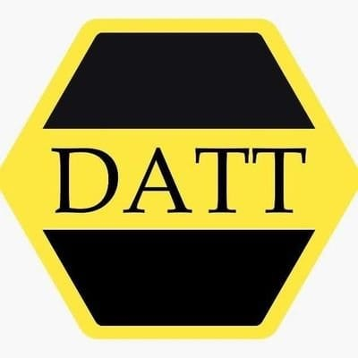
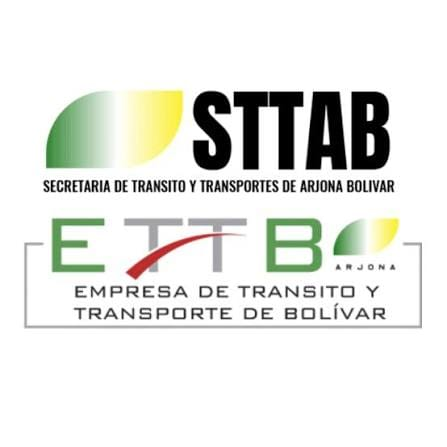

Timo
Asistente de Transiweb
¡Hola! Soy Timo. ¿Qué Trámite Necesitas Consultar?
Transforma los trámites de tránsito en experiencias más rápidas, sencillas y accesibles, conectando la tecnología con las necesidades de la comunidad para hacer más fácil lo que antes parecía complicado.


Transiweb conecta datos de trámites, organismos y usuarios en una sola plataforma, facilitando el acceso a los servicios de tránsito.
Solicita y gestiona diferentes servicios de manera rápida, segura y totalmente virtual.
Carga los documentos requeridos y consulta el estado de tu solicitud desde cualquier lugar.
Consulta en qué etapa se encuentra el proceso de tu solicitud.
Consulta el valor de tu trámite y utiliza los medios de pago disponibles.
Envía los documentos necesarios para cada trámite y mantén tu información organizada.
Los funcionarios pueden revisar solicitudes, validar documentos, actualizar estados y gestionar usuarios.
El recorrido de un trámite dentro de Transiweb, de principio a fin.
Selecciona el trámite que necesitas y completa tus datos.
Adjunta los documentos requeridos de forma rápida y segura.
Transiweb revisa la información y te mantiene actualizado sobre el proceso.
Consulta el resultado de tu trámite sin desplazamientos.